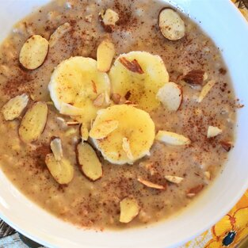

Carlos' Cooking Catalog | Odin Recipes | Cut Oats

Description
Delicious and filling breakfast of creamy steel-cut oats,
cooked in the slow cooker with cinnamon, brown sugar, and raisins.
Ingredients
- 4 Cups Water
- 2 Cups Steel Cut Oats
- 2 Cups Almond Milk
- 2 Cups Half-And-Half
- 1/2 Cup Brown Sugar
- 1/2 Cup Raisins
- 1 Cinnamon Stick
Steps
- Combine water, steel cut oats, almond milk, half-and-half, brown sugar, raisins,
and cinnamon stick in a slow cooker;
mix to combine. Cook on Low until oats are soft, about 8 hours.